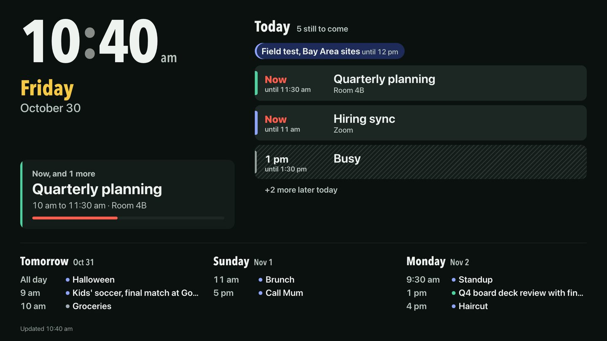

كنت عايز calendar واحد أنا ومراتي نشوفه احنا الاتنين: على موبايلاتنا، وعلى شاشة واحدة في البيت بتعرض اليوم من غير ما حد يفتح أي حاجة.
حطيت نفس القاعدة اللي حطيتها لما بقيت بكلّم الـ AI بتاعي على الموبايل: يكون على الـ hardware بتاعي، ومحدش يوصله غير أجهزتنا احنا. فطلبت من Claude Code يبنيه، ومن Raspberry Pi يعرضه على التلفزيون.
يومين، و22 commit
أول commit كان الـ back end كله: المواعيد، وقواعد التكرار، والمشاركة، ومزامنة الإيميل، والـ tests. بعدها جت المراجعة. agent بيراجع الأمان قرا الـ code على كذا جولة، وكل ملاحظة اتصلّحت قبل الجولة اللي بعدها. في الآخر كان فيه 145 test، وscript بيفتح كل شاشة على كل مقاس، فاتح وغامق، وبيفشل لو التباين ضعيف أو النص مقصوص أو فيه زرار أصغر من إنه يتداس عليه.
قواعد التكرار خدت اهتمام أكتر ما كنت متوقع. «كل تلات وخميس لحد 15 ديسمبر»، و«آخر جمعة في الشهر»، والسؤال اللي أي calendar لازم يسأله لما تغيّر اجتماع واحد من سلسلة: الميعاد ده بس، ولا ده واللي بعده، ولا كل المواعيد؟
بشاركه مع مراتي
المشاركة بتتعمل بلينكات، لينك لكل شخص. كل لينك بيقول الشخص ده يقدر يعمل إيه: يشوف العناوين والأماكن، ولا يشوف «مشغول» بس؛ يكتب تعليقات؛ يحجز وقت باسمه. اللينك ممكن يخلص بعد مدة، ولو قفلته بيتقفل في ساعتها. اللينك بيظهر مرة واحدة بس وهو بيتعمل، والـ server مش بيحتفظ غير بـ hash منه.
مراتي معاها لينك بيشوف التفاصيل كاملة. أي وقت يتحجز من لينك مشترك بيظهر على الـ calendar بتاعي مخطط ومكتوب عليه اسم الشخص، فالميعاد يبان قبل ما يتعارض مع حاجة.
bug على الـ Home Screen. لينك مشترك اتحفظ على الـ Home Screen بتاع موبايل كان بيفتح صفحة تسجيل الدخول بتاعتي بدل الـ calendar المشترك. الـ app كان عنده manifest واحد للكل، ومكتوب فيه «ابدأ من الصفحة الرئيسية». دلوقتي كل لينك مشترك، ولينك التلفزيون كمان، ليه واحد خاص بيه، فالأيقونة بتفتح الـ calendar اللي اتحفظت منه.
دعوات تقدر تثق فيها
كل ربع ساعة الـ app بيسأل Mail على الـ Mac عن الرسايل الجديدة اللي شكلها دعوات، وبيقرا الجزء بتاع الـ calendar منها. الحتة المهمة مش القراية. الحتة المهمة إنه يقرر مين مسموح له يغيّر ميعاد بالإيميل، لأن سطر «From» في الإيميل سهل يتزوّر.
فالدعوة متتحسبش جاية من صاحبها غير لو مزوّد الإيميل اتأكد منها وهي داخلة، والـ app بيقرا التأكيد ده من الجزء اللي المزوّد نفسه كتبه في الـ headers بس. أي تعديل أو إلغاء بيتقبل بس من الشخص اللي بعت الدعوة الأصلية. وأي حاجة مقدرش يتأكد منها بتظهر برضه، مرة واحدة، وعليها ملاحظة صفرا «Check this invite».
التلفزيون

الشاشة دي صفحة لوحدها، معمولة عشان تتشاف من آخر الأوضة. ساعة كبيرة والتاريخ. والنهارده، المواعيد اللي طول اليوم الأول، وبعدين اللي شغال دلوقتي واللي بعده، والمواعيد اللي خلصت متجمعة في سطر واحد، و«+2 كمان» لو اليوم مليان. وبعدين التلات أيام اللي جايين. بتتحدّث كل دقيقة، وفضلها غامقة، ومش محتاجة حد يلمسها خالص. ولو الشاشة متلفّة على جنبها بتقلب لوحدها على layout بالطول، وفيه كام صورة بتتبدّل عليها بين التحديثات.
بتتفتح بلينك خاص بيها للقراية بس، فالتلفزيون يقدر يعرض اليوم بس ميقدرش يغيّر أي حاجة.
الـ Raspberry Pi
شغلانة الـ Pi كلها إنه يفتح صفحة واحدة ويفضل فاتحها. وده طلع محتاج كام خطوة:
- 01بيشتغل ويسجّل دخول لوحدهفلو النور قطع، التلفزيون بيرجع للـ calendar من غير ما حد يلمسه.
- 02بيستنى الـ Macscript صغير بيتأكد الأول من الـ Wi-Fi والشبكة الخاصة وصفحة الـ health بتاعة الـ calendar، فالشاشة عمرها ما تفتح على error.
- 03Chromium بيفتح على الشاشة كلهاkiosk mode: من غير شريط، ولا رسايل منبثقة، ولا «ترجّع الصفحات؟».
- 04لو اتقفل، بيرجعالـ script بيشغّله تاني بعد خمس ثواني.
لينك الشاشة فيه سر، فعمره ما بيظهر في script أو log. بيتحفظ في ملف على الـ Pi محدش يقدر يقراه غير اليوزر بتاعه. ولو عايز أغيّره، بنسخ اللينك الجديد على الـ Mac وبشغّل أمر واحد: بيبعت اللي في الـ clipboard للـ Pi عن طريق SSH وبيعيد تشغيل الشاشة.
الـ bug اللي وقّف الـ Pi كله. الـ Pi كله هنج. والـ log بتاع النظام قال إن كارت الـ SD stuck being busy. Chromium بيكتب في الـ profile والـ cache بتوعه طول الوقت، والكارت مكانش ملاحق. الحل كان إن Chromium ياخد profile وcache عايشين في الـ memory بدل الكارت، وبيتمسحوا مع كل تشغيل. دلوقتي الكارت تقريبًا مالوش شغل.
وحاجة صغيرة كمان: منطقة الـ Pi متظبطة على بريطانيا، يعني ساعة 24 ساعة، فاللينك نفسه بيطلب ساعة 12 ساعة.
إزاي فاضل خاص
أجهزتنا بس. الـ app بيسمع على الـ Mac نفسه بس. موبايلاتنا والـ Pi بيوصلوله عن طريق Tailscale، الشبكة الخاصة بتاعتي، وعمره ما اتنشر على الإنترنت المفتوح.
لينكات مش passwords للضيوف. اللينكات المشتركة tokens عشوائية طويلة، متخزنة كـ hashes بس، وليها حد لعدد المحاولات. و«Sign out everywhere» بيقفل كل الجلسات مرة واحدة.
مفيش حاجة بتتحمّل من برّه. لا fonts ولا scripts ولا styles من مواقع تانية. الصفحة مش بتشغّل غير اللي الـ Mac نفسه بيقدّمه.
الـ AI بتاعي يقدر يستخدمه كمان
الـ calendar ليه MCP server، فـ Claude Code ومحرك الـ AI بتاعي يقدروا يعرضوا المواعيد، ويلاقوا وقت فاضي في يوم، ويضيفوا ميعاد أو يحجزوا وقت، بالظبط زيي. «لاقيلي ساعة يوم الخميس» بقت سؤال، مش تدوير.
اللي جاي
تسجيل دخول حقيقي لمراتي بدل اللينك. تجربة دعوات من مزوّدين إيميل حقيقيين، مش بس اللي الـ tests بتوصفهم. وتجربة السحب لتحريك ميعاد على iPad حقيقي، لأنه لحد دلوقتي اتجرب في browser بس.
الـ calendar وإعداد الـ Pi والمقال ده اتبنوا بـ Claude Code.